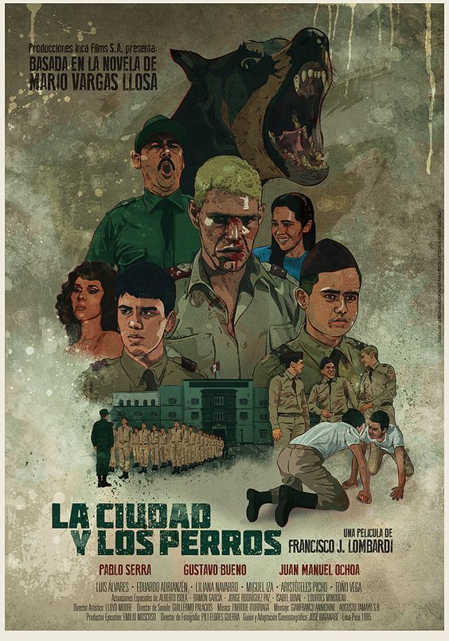

ANÁLISIS LITERARIO
Explora las tensiones psicológicas, relaciones y contradicciones de los personajes dentro del Colegio Militar Leoncio Prado.
Violencia — Poder — Masculinidad — Supervivencia
El Jaguar es una de las figuras más complejas y violentas de la novela. Dentro del Colegio Militar Leoncio Prado, construye su identidad mediante el miedo, el dominio físico y la intimidación constante. Su liderazgo dentro del Círculo surge de la capacidad de imponer respeto a través de la agresión.
Sin embargo, la novela muestra que su violencia no nace únicamente de su personalidad, sino también de un entorno institucional que transforma la brutalidad en una forma legítima de supervivencia. El Leoncio Prado premia la dureza emocional y castiga cualquier signo de vulnerabilidad.
A medida que avanzan los acontecimientos, el personaje revela contradicciones internas: miedo al fracaso, necesidad de control y dificultad para construir vínculos afectivos reales. La agresividad termina funcionando como una máscara psicológica.
Mantener el control sobre los demás mientras lucha contra la posibilidad de mostrarse vulnerable dentro de un sistema construido sobre violencia y jerarquía.
Fragilidad — Miedo — Exclusión — Humanidad
Ricardo Arana representa la vulnerabilidad dentro de un entorno construido sobre violencia, humillación y competencia masculina. Su apodo, “El Esclavo”, refleja la posición subordinada que ocupa dentro del sistema social del Leoncio Prado.
A diferencia de otros estudiantes, el personaje no logra adaptarse completamente a la lógica agresiva del colegio militar. Vive constantemente bajo miedo, presión psicológica y necesidad de aceptación.
La novela utiliza al Esclavo para mostrar cómo la violencia institucional puede destruir emocional y psicológicamente a quienes no encajan dentro del modelo dominante de masculinidad impuesto por el colegio.
Su relación con Teresa representa una búsqueda de afecto y estabilidad emocional, convirtiéndolo en uno de los personajes más humanos y trágicos de la obra.
Intentar conservar sensibilidad emocional dentro de una institución que transforma la debilidad en motivo de humillación y castigo.
Escritura — Observación — Identidad — Crítica social
Alberto Fernández, conocido como “El Poeta”, ocupa una posición distinta dentro del Leoncio Prado. Aunque participa de ciertas dinámicas violentas del colegio militar, también mantiene una mirada crítica sobre el comportamiento de sus compañeros y sobre el funcionamiento de la institución.
La escritura funciona para él como mecanismo de observación, expresión y escape psicológico. A través de sus relatos, cartas y reflexiones, el personaje revela una sensibilidad que contrasta con el ambiente agresivo del colegio.
El Poeta representa la tensión constante entre adaptación y conciencia moral. En muchos momentos intenta integrarse al sistema masculino impuesto por el Leoncio Prado, pero simultáneamente cuestiona la violencia, las jerarquías y la pérdida de humanidad dentro del grupo.
Su relación con Teresa también permite observar una búsqueda de afecto y estabilidad emocional, mostrando que incluso quienes aparentan adaptarse al sistema continúan afectados por inseguridades internas y conflictos éticos.
Intentar conservar pensamiento crítico y sensibilidad emocional dentro de un entorno que exige dureza, obediencia y silencio colectivo.
Ética — Justicia — Autoridad — Resistencia moral
El teniente Gamboa representa una de las pocas figuras de autoridad que intenta actuar de manera ética dentro del sistema militar. A diferencia de otros oficiales, demuestra preocupación genuina por la verdad y la justicia.
Su presencia dentro de la novela funciona como contraste frente a la corrupción, el silencio institucional y la violencia normalizada dentro del Leoncio Prado.
Gamboa comprende que la disciplina militar no debería construirse mediante humillación, miedo o encubrimiento. Sin embargo, constantemente se enfrenta a estructuras superiores que priorizan la reputación institucional sobre la verdad.
El personaje también evidencia las limitaciones del individuo frente a sistemas autoritarios: aunque intenta actuar correctamente, termina atrapado dentro de una institución que restringe sus posibilidades reales de cambio.
Defender principios éticos y búsqueda de verdad dentro de una institución que protege el silencio, la obediencia y la estabilidad del sistema militar.
Afecto — Idealización — Sensibilidad — Escape emocional
Teresa representa uno de los pocos espacios de humanidad y afecto dentro de una novela dominada por violencia, humillación y tensión masculina. Su presencia funciona como contraste frente al ambiente agresivo del Colegio Militar Leoncio Prado.
Tanto Alberto como Ricardo Arana proyectan sobre ella deseos distintos: amor, estabilidad, comprensión y una posibilidad de escapar emocionalmente de la brutalidad cotidiana del colegio militar.
La novela muestra que Teresa no funciona únicamente como interés romántico. También representa la construcción idealizada de afecto que desarrollan personajes profundamente afectados por aislamiento, miedo y necesidad emocional.
Su presencia permite observar cómo, incluso dentro de estructuras violentas, los personajes continúan buscando vínculos, comprensión y reconocimiento afectivo.
Convertirse en símbolo de esperanza, afecto y estabilidad emocional para personajes psicológicamente marcados por violencia y represión emocional.
Brutalidad — Instinto — Violencia — Masculinidad agresiva
Boa representa una de las expresiones más extremas de violencia dentro del Leoncio Prado. Su comportamiento suele estar guiado por impulsividad, agresividad física y necesidad constante de demostrar fuerza frente a los demás estudiantes.
El personaje refleja cómo el entorno militar transforma la violencia en herramienta de integración social. Dentro del colegio, la brutalidad deja de ser excepción para convertirse en una forma válida de reconocimiento y pertenencia grupal.
Boa participa activamente en dinámicas de intimidación, castigo y humillación colectiva, revelando hasta qué punto el sistema institucional termina normalizando la pérdida progresiva de empatía.
A través de él, la novela evidencia cómo ciertos individuos terminan absorbiendo completamente la lógica violenta del entorno, confundiendo poder con agresividad y autoridad con miedo.
Construir identidad y reconocimiento mediante violencia constante, dentro de un sistema que premia la dureza emocional y el dominio físico.
Poder — Jerarquía — Violencia colectiva — Control
El Círculo funciona como una estructura informal de poder dentro del Colegio Militar Leoncio Prado. Más que un simple grupo de estudiantes, representa un sistema paralelo construido mediante miedo, obediencia y control psicológico.
Bajo el liderazgo del Jaguar, el grupo establece reglas propias, castigos internos y mecanismos de vigilancia que reproducen, e incluso intensifican, la violencia institucional del colegio.
La existencia del Círculo evidencia cómo los estudiantes terminan reproduciendo las mismas dinámicas autoritarias que observan en la estructura militar. La violencia deja de ser únicamente impuesta desde arriba: también es perpetuada entre compañeros.
El grupo simboliza la pérdida progresiva de individualidad dentro de sistemas violentos. Para pertenecer, los miembros deben aceptar silencios, agresiones y jerarquías que condicionan sus relaciones personales.
Mantener cohesión y poder colectivo mediante miedo, violencia y obediencia, sacrificando identidad individual y principios éticos.
Autoridad — Burocracia — Silencio institucional
El teniente Huarina representa la dimensión más burocrática y conformista de la institución militar. A diferencia de Gamboa, prioriza la estabilidad del sistema sobre la búsqueda de verdad o justicia.
Su comportamiento refleja cómo muchas estructuras autoritarias funcionan mediante encubrimiento, obediencia jerárquica y preservación de la imagen institucional.
Frente a los conflictos y actos violentos ocurridos dentro del Leoncio Prado, Huarina adopta una posición distante, evitando cuestionar profundamente las dinámicas de abuso presentes dentro del colegio.
El personaje demuestra que la violencia institucional no depende únicamente de quienes ejercen agresión directa, sino también de quienes permiten, silencian o justifican esas conductas.
Proteger la estabilidad institucional aun cuando ello implique ignorar, minimizar o encubrir situaciones de injusticia y violencia dentro del colegio militar.
Adaptación — Jerarquía — Masculinidad militar
Arróspide representa al estudiante que logra adaptarse con relativa facilidad a las reglas violentas y competitivas del Leoncio Prado. Su comportamiento evidencia cómo algunos individuos interiorizan rápidamente la lógica militar del poder y la obediencia.
El personaje participa activamente en dinámicas grupales marcadas por burlas, presión colectiva y demostraciones constantes de masculinidad. Su actitud revela la necesidad de conservar posición y reconocimiento dentro del grupo.
A través de Arróspide, la novela muestra cómo la violencia puede convertirse en comportamiento cotidiano, perdiendo progresivamente cualquier cuestionamiento moral.
Mantener reconocimiento y pertenencia dentro de una estructura social basada en competencia, agresividad y jerarquía masculina.
Marginalidad — Adaptación — Supervivencia
El Rulos representa a los estudiantes que sobreviven dentro del Leoncio Prado adaptándose constantemente a las dinámicas cambiantes del grupo. Aunque no posee el liderazgo del Jaguar, participa del ambiente colectivo marcado por presión social y violencia.
Su presencia ayuda a construir la sensación de comunidad masculina cerrada y agresiva que domina la novela. El personaje evidencia cómo incluso quienes ocupan posiciones secundarias terminan absorbidos por las lógicas del sistema militar.
La novela utiliza personajes como El Rulos para mostrar que la violencia institucional no afecta únicamente a protagonistas, sino a toda la estructura social del colegio militar.
Adaptarse continuamente a las jerarquías y dinámicas violentas del grupo para conservar pertenencia y evitar exclusión social.
Presión — Castigo — Obediencia — Consecuencias
Cava desempeña un papel fundamental dentro de los acontecimientos que desencadenan gran parte del conflicto central de la novela. Su participación en el robo del examen revela cómo las dinámicas colectivas del Leoncio Prado empujan constantemente a los estudiantes hacia conductas riesgosas y violentas.
El personaje evidencia la enorme presión ejercida por el grupo y por la estructura militar. Dentro del colegio, la obediencia al Círculo y la necesidad de conservar pertenencia social terminan siendo más importantes que principios éticos individuales.
La situación de Cava también muestra cómo el sistema militar responde mediante castigo, vigilancia y control disciplinario, reforzando constantemente el miedo como mecanismo institucional.
A través de él, la novela explora cómo los estudiantes terminan atrapados entre presión grupal, supervivencia social y temor a las consecuencias impuestas por la autoridad.
Intentar conservar pertenencia y aceptación dentro del grupo, enfrentándose al mismo tiempo a las consecuencias morales y disciplinarias de sus acciones.
Autoridad — Institución — Control — Apariencia
El Coronel representa el poder institucional dentro del Colegio Militar Leoncio Prado. Su figura simboliza la necesidad constante de conservar orden, disciplina y prestigio militar, incluso cuando existen conflictos internos profundamente violentos.
A lo largo de la novela, la autoridad institucional aparece más preocupada por proteger la imagen del colegio que por comprender realmente las consecuencias humanas de la violencia ejercida sobre los estudiantes.
El personaje refleja cómo ciertas estructuras de poder priorizan estabilidad, reputación y obediencia colectiva, minimizando problemas éticos o emocionales dentro de la institución.
Su presencia fortalece la crítica social de la novela, mostrando que la violencia del Leoncio Prado no surge únicamente de los estudiantes, sino también de un sistema que reproduce autoritarismo y silencio institucional.
Mantener el orden y la imagen institucional dentro de un entorno marcado por violencia, miedo y conflictos éticos permanentes.

Los personajes de la novela no funcionan únicamente como individuos. Cada uno representa distintas formas de responder a la violencia, la autoridad y la presión social.